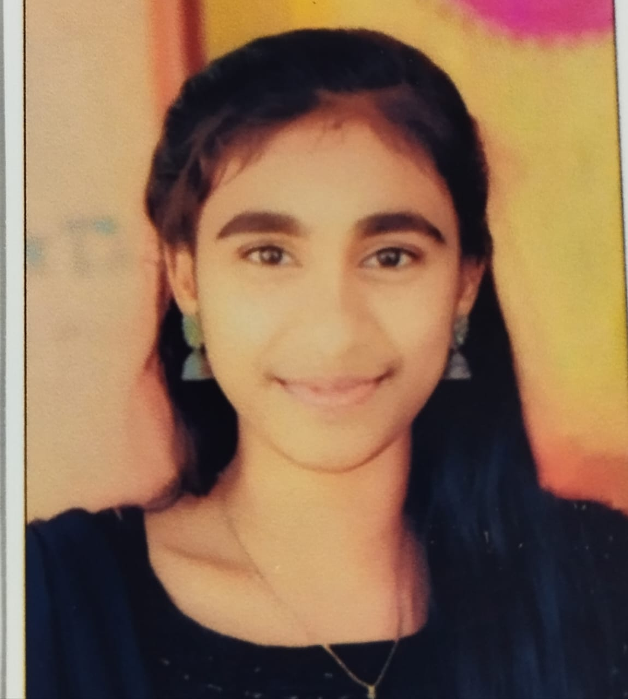

| DIST : | SRIKAKULAM | ||||||||||||||
| NAME: | BASINA PRIYA DHARSHINI | ||||||||||||||
| FATHER'S NAME: | BASINA VENKATA RAMANA | ||||||||||||||
| MOTHER'S NAME: | BASINA TEJA | ||||||||||||||
| SCHOOL NAME: | 01190-GOVT HIGH SCHOOL KOTTURU | ||||||||||||||
| CENTER NAME: | 41147-HOLY CROSS E M SCHOOL,KOTTURU | ||||||||||||||
| IDENTIFICATION MARKS: | 1)A MOLE ON THE FOREHEAD 2)A MOLE ON THE RIGHT MIDDLE FINGER | ||||||||||||||
| TIME TABLE: |
| ||||||||||||||
| Examination Timing: | All papers : 9:30AM to 12:45PM |

B.PRIYA DHARSHINI
| FIRST LANG: | TELUGU-TEL;HINDI-HIN;TAMIL-TAM;KANNADA-KAN |
| SECOUND LANG: | HINDI-HIN;TELUGU-TEL;ENGLISH-ENG |